Architecture
Version 26.1.9502
Version 26.1.9502
- Design Principles and Implementation
- Concepts
- Implementation Overview
- Message Implementation
- Connector Implementation
- Flows and Workspaces Implementation
- Folder Hierarchy
- Automation
- Putting This Document to Use
Architecture
CData Arc is a message-driven platform for integrating business processes. It provides a centralized communications hub that enables applications, databases, and external messaging systems to talk to each other.
Design Principles and Implementation
The Arc architectural decisions flow from a set of core design principles. This section focuses on three aspects of Arc design:
- Principles and values that we prioritize
- Core concepts necessary for a high-level understanding of Arc
- Architectural decisions and how they fit with our design principles
The Core Principles and Concepts sections are intended for both technical and non-technical users. The remaining implementation sections are intended to help engineers understand how to leverage the Arc architecture.
Core Principles
The following diagram illustrates the core principles of Arc design:
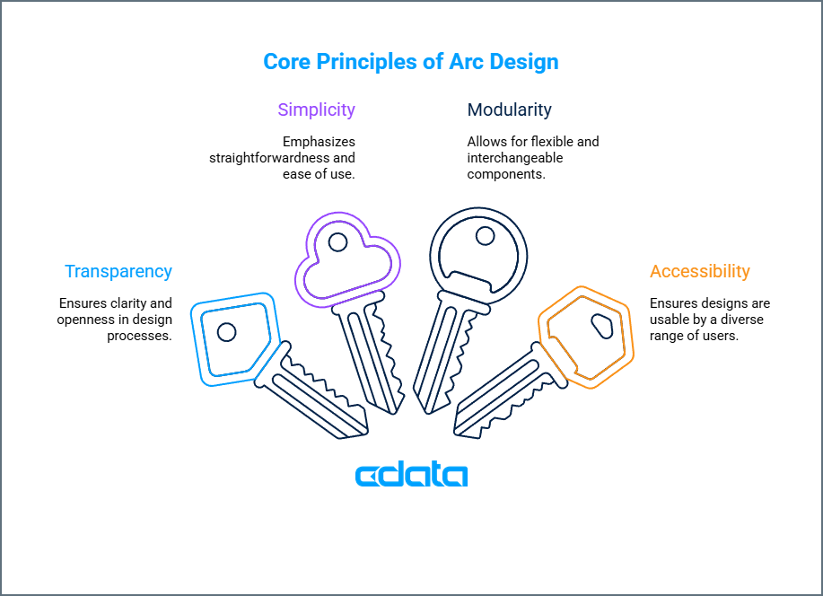
The Arc architecture is not the only way that the design principles above could be implemented in an integration platform. What follows are explanations of our implementation choices and how they fit with our design principles.
Concepts
At a high level, Arc implementations are composed of three elements:
- Flows
- Connectors
- Messages
The following diagram illustrates the relationships between these elements:
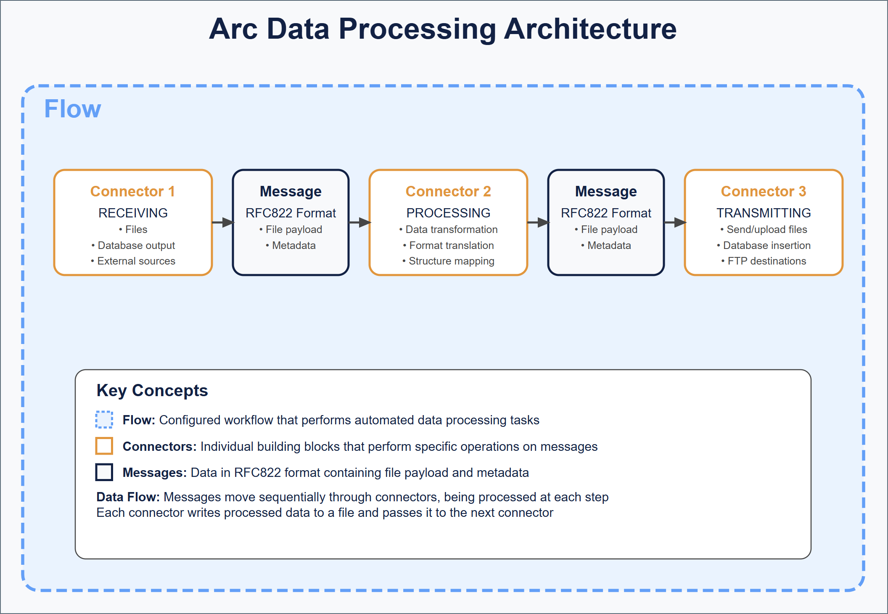
Flows
Arc flows are configured workflows that perform an automated set of data processing tasks. Flows are composed of a number of connectors that are connected to each other so that data processed by one connector is automatically passed along to the next connector in the flow.
In the UI, flows are held in workspaces on the Flows page. Connectors are added to the blank canvas where they can be configured and connected to each other. The image below represents a simple flow consisting of two connectors: AS2 and File.
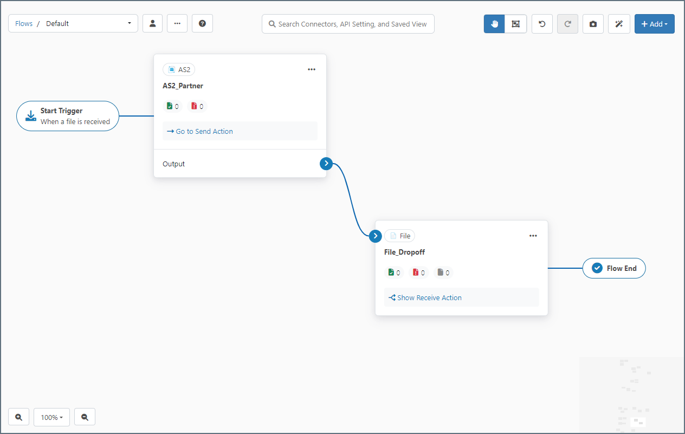
The blue arrow between the connectors indicates that data received by the AS2 connector is automatically passed along to the File connector. Dragging the blue dot on the right side of a connector onto the left side of another connector establishes this relationship.
The series of connectors in a flow establishes a logical chain of data processing, so flows should be designed to accomplish a specific business task. These tasks can vary in complexity from simply downloading a file all the way to synchronizing multiple back-end applications in accordance with received business documents.
You can configure multiple flows in Arc to accomplish separate tasks. Flows act independently of each other unless they are explicitly connected to each other by a blue flow arrow.
Connectors
Connectors are the individual building blocks of a flow, operating on application data, or messages. Each connector performs a specific operation on a message and passes it along to the next connector in the flow, or to an outside party (such as an FTP destination).
Operations fall primarily into three categories: Trigger, Transform and Terminal.
- Trigger connectors start a flow by Receive Automation pulling or creating a file or, for connectors that support passive receive, when the connector receives a file from an external client. Examples include AS2, Email Receive, or SFTP.
- Transform connectors are connectors that reside in the middle of a flow and are responsible for performing work on the message (modifying it in some way). Examples include X12, XML Map, or CSV.
- Terminal connectors are the end of a flow, where Arc hands the message off to the underlying disk or where the message is consumed by the connector during its send action and no output is generated. Examples include File, MySQL, or any database connector configured for Upsert.
Each time a connector performs one of the above operations it is processing a transaction.
In the workspaces on the Flows page, when you add a connector to a canvas its configuration settings panel opens:
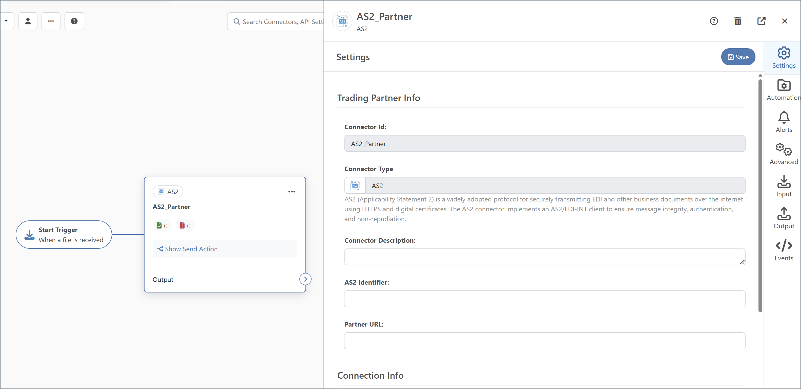
Connectors have different sets of configuration settings based on the connector type (AS2, SQL Server, XML, and so on).
Some connectors, such as AS2 and SFTP, either receive data from an external party or server or send data out to an external party or server (or both). These connectors are typically at the start or the end of a flow, since that’s where data enters or exits the application.
Other connectors, such as XML Map and X12, process data locally in the application. These connectors are typically in the middle of a flow, since they can only receive data from other connectors (not from an external source) and can only send data to other connectors (not to an external destination).
Messages
When data is passed between connectors in a flow, it is passed in the form of a message. Messages consist primarily of file payload data (the data that Arc is processing) and metadata (information that Arc uses to track the flow of data through the application).
Messages are explained in more detail in Message Implementation, but the high-level takeaway is that messages are files in standard RFC822 (Internet Message) format. When a connector passes data to another connector in the flow, it writes the data to a file then passes that file to the next connector down the line, as illustrated in the following diagram.
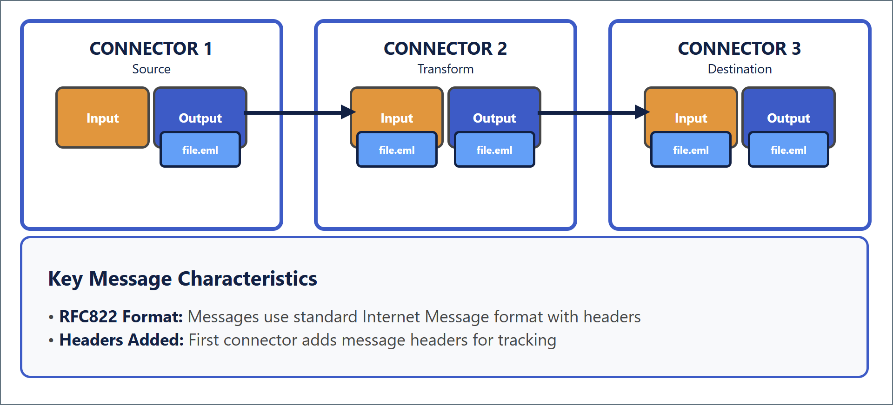
At each step in a flow, a message (file) is received or downloaded into the application (using a Trigger connector), transformed locally in the application (using a Transform connector), or sent or uploaded out of the application (using a Terminal connector). Each of these operations is referred to as a transaction.
Arc is transparent: you can observe what happens inside the platform by looking at the file system, seeing how messages are copied from one folder to another, and viewing message content using a regular text editor or other tool.
Implementation Overview
This section provides technical details about Arc’s implementation of the core concepts defined above (Flows, Connectors, and Messages), together with explanations of why we think our implementation satisfies our Design Principles.
File-based Architecture
Arc stores all data in files on the filesystem, so everything in the application persists to disk. For example:
Connectors in a configured flow read files (messages) from a single Input folder and write files (messages) to a single Output folder. When data passes from one connector to the next, these message files are moved from the Receive folder of the first connector into the Send folder of the next connector.
Arc provides a web UI on top of this filesystem-based infrastructure to easily construct and configure flows. Arc’s Admin API and UI are the recommended methods for managing configurations. These methods make direct modifications to the configuration files on disk. The file-based architecture also makes it easy to integrate Arc with Infrastructure as Code (IaC) tools and version control systems like Git. For more details on how to integrate Git with Arc, see Using Git with CData Arc.
Message Implementation
Messages in Arc are simple files on disk that contain the raw data processed by the application. Messages have two parts:
- Body: the application data payload
- Headers: message metadata
The combination of headers and body is stored in RFC2822-compliant files with an .eml extension that can be opened by any standard text editor or email client. The headers are a simple list of name: value headers separated by newline characters, and the body is separated from the headers by two newline characters.
Important: To ensure that Arc performs reliably, do not interact directly with these files while the application is running. External programs placing locks on these files can cause performance and reliability issues.
Message Body
The message body or payload is the actual file data being processed by the application. This is the data that is received from a remote source, manipulated by transformation connectors, and so on. While the message headers are primarily used by Arc for tracking messages, the message payload contains the data that users care primarily about.
When data is received, Arc generates a message (it writes a new message file to disk) and uses the incoming data as the message body. For example, when an SFTP connector downloads a file from a remote server, the contents of that remote file become the body of a new message.
When data is processed locally in the application (such as when EDI is translated into XML, or when a file is mapped into a new format), the connector performing the operation reads the body of the input message, processes the data in memory, and writes the results into the body of an output message.
When data leaves the application (for example, when uploading a file to a remote server, sending a file to a peer, or inserting into a database), only the body of the input message is sent out.
Message Headers
Message headers help Arc track the progress of data through the application. Headers include a unique MessageId (which helps Arc know the full lifecycle of a message, even if the filename is changed), timestamps from when connectors processed the message, any errors that might have occurred during processing, and other metadata.
Headers are listed in headerName: headerValue syntax at the top of the message, delimited by line breaks. Hovering over a message and clicking View Details shows its associated headers, and lets you download the message file content.
Message headers are also used for miscellaneous values that are helpful for Arc to know in a flow. For example, when downloading files from a subfolder on a remote FTP server, Arc uses a subfolder header to track the folder path to the message in case this folder path needs to be recreated on the local system.
Arc augments the raw data files with metadata that describe how the application has processed the file. These are some of the most common headers:
- A unique, durable MessageId that identifies the file throughout the flow
- Timestamps of the file being processed
- The ConnectorId of any connector that processed the file
- Any instance of the file failing to process due to an error
Message headers are never edited or overwritten by the application. New headers are always appended to the existing list so that the full processing history is preserved.
Messages in a Flow
While Arc uses message headers internally for tracking and understanding the data processed by the application, it hides these details from users unless the message is inspected. For example, Arc uses an internal MessageId to identify a message, but displays a public filename in Input, Output, and Transactions tabs, and on the Messages tab.
To examine the headers on a message, hover over the message and choose View Message Details. The following image shows messages on the Transactions tab.
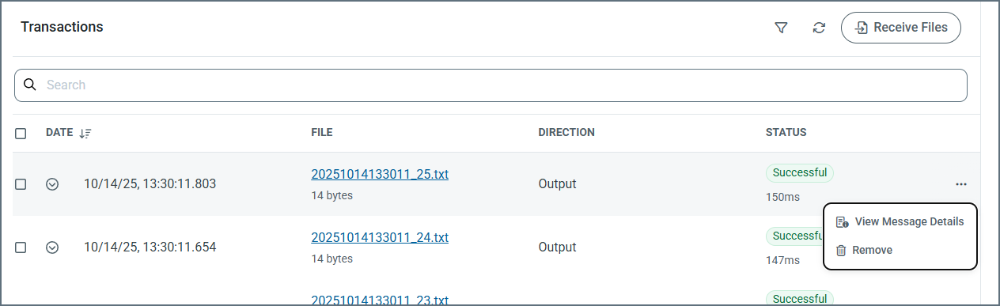
Arc stores messages in the .eml format when they are written to a connector’s internal Receive folder, regardless of where the message is in the flow. However, when messages are sent to an external system (for example, a database or an SFTP server), Arc only uploads the file content and does not include the .eml headers. Similarly, when writing files to disk using the File connector’s Send action, Arc omits the .eml structure so that the output matches what external processes expect. In other words, .eml headers are part of Arc’s internal file format but are not included when delivering data to external destinations.
Batch Groups and Batch Messages
Messages can contain multiple payloads, in which case they are considered batch groups. Each individual payload in a batch group is considered a batch message, as illustrated in the following diagram.
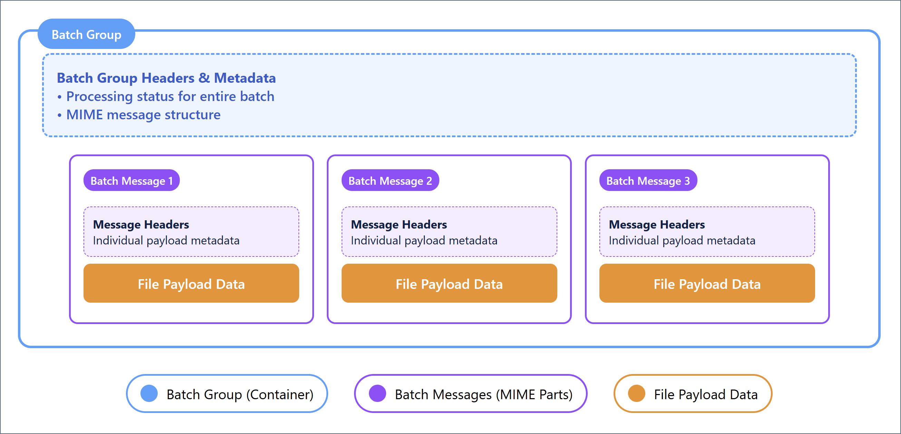
Batch Groups
Messages can be batched together into batch groups to improve performance and make large groups of messages more manageable. Batch groups are MIME-format files where each MIME part is a separate batch message. The batch group maintains metadata about the batch using the same header scheme that basic messages use. These headers track the processing of the batch as a whole, rather than individual parts of the batch.
Batch Messages
Each batch message in a batch group is a MIME part containing the file payload data processed by the application. Each batch message contains metadata associated with the payload (but not the batch group) in the MIME part. Batch messages have multiple sets of metadata: one set of headers for tracking the batch group as a whole, and a separate set of headers for each message in the batch.
Accessing and Viewing Messages
Because messages are just simple files on disk, users and external systems can access and view messages currently in the Arc pipeline. To access messages with an external application, you need to understand where on the filesystem to look for the message .eml files. See Folder Hierarchy to learn the exact location of the message files.
Important: To ensure that Arc performs reliably, do not interact directly with messsage files while the application is running. External programs placing locks on these files can cause performance and reliability issues.
You can also see messages in the Arc UI and the Arc Admin API. Messages are displayed in the Input, Output, or Transaction tab for any connector that has processed a message, as well as on the Activity page. Click View Details to open the Message Information page:
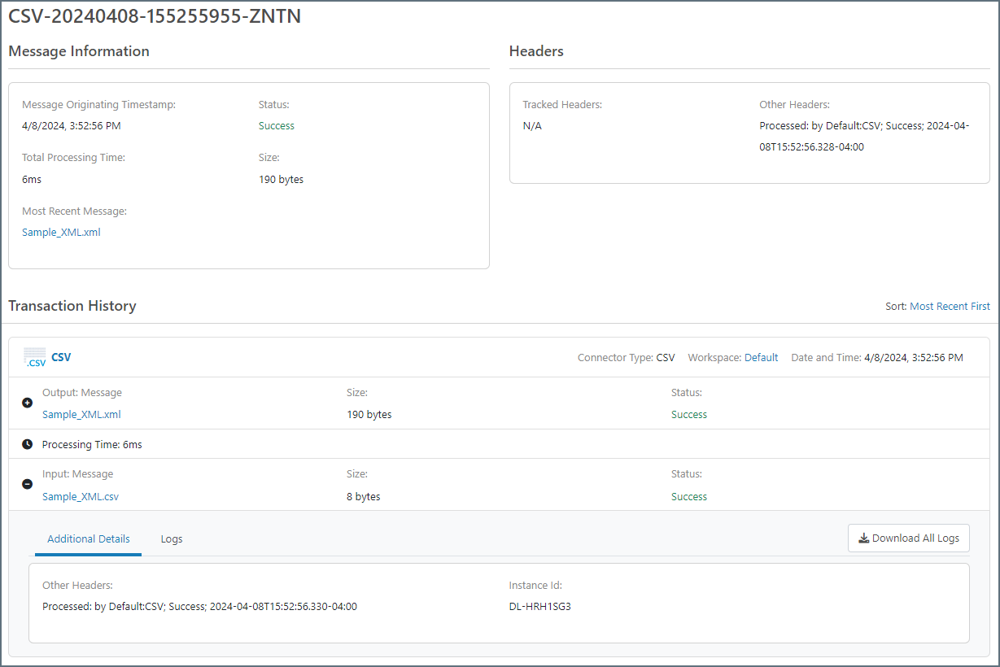
The values displayed in this panel are the message’s headers. Click the Download button to access the message body. Click Download Logs to download the logs associated with a message.
Message Tracking and Logs
Messages include a MessageId header that functions as a unique identifier for messages. This MessageId remains the same as the file passes through the flow, even if the file itself is renamed. As a result, the progress of any file throughout a flow can be traced by referencing its MessageId. This value also allows users to find log data associated with a particular transaction.
Arc stores log data in two formats:
These formats and the relationship between the two are detailed below.
Application Database
The application database is a relational database that Arc uses to:
- Store metadata about each transaction processed by the application
- Store logs for application operations that are not specific to any transaction
- Store the state of certain connectors (for example, when a connector is awaiting an acknowledgment or receipt)
Arc comes packaged with a SQLite (Windows/.NET) or Derby (Java) database, but it can be configured to use an external database like SQL Server, PostgreSQL, or MySQL instead. Arc handles the creation and maintenance of all relevant tables in the application database.
To use an external database, you must configure the database connection string in the configuration file for the server that hosts the application (see Configuring the Application Database in the .NET edition and the cdataappdb setting in the arc.properties file in the Cross-Platform edition).
There is a table in the application database that is used to track messages and find logs. It stores metadata for each transaction processed by the application, and the metadata includes the MessageId of the message that was processed. Use the Activity page in the UI to find messages and transaction logs. You can search for transaction metadata (such as timestamp, ConnectorId, and status) on the Activity page. To minimize the database footprint, verbose logging data is not included on the Activity page and is instead stored in log files on disk.
Verbose Log Files
Each time Arc processes a message, it generates a log folder with the same name as the MessageId. This folder contains the verbose log files, and the specific logging content depends upon the type of connector that sent and/or received the file. For example, the AS2 connector logs the MDN receipt, raw request and response, and connection log in addition to the .eml file representing the message itself.
These log files are not necessary for merely tracking a message through the flow; the metadata stored in the application database is enough to track a message. However, to find detailed information on a specific transaction (especially when debugging), you need to find the appropriate files on disk based on the MessageId of the message and the connector that processed it.
Users can manually navigate to the appropriate log folder on disk once they know the MessageId; however, it is often more convenient to use the application database to find these verbose log files. See Relationship Between Application Database and Log Files for details.
Relationship Between Application Database and Log Files
The metadata stored in the application database includes everything needed to find the log files associated with a particular transaction. The Arc UI and Admin API take advantage of this relationship to provide easy access to the log files for any transaction.
-
The Activity page contains all the transaction metadata. Hover over any transaction entry and click View Details to access the associated log files; underneath, Arc is using the MessageId to find the appropriate log files on disk.
-
Similarly, the Input, Output, and Transaction tabs on connector configuration panels provide access to any transaction processed by that specific connector. Expand these transactions to view and download verbose log files.
-
The application database can also be helpful for manually navigating to the appropriate folder where transaction log files are held. Often, a user knows the filename of a transaction but not the internal MessageId. The Messages tab on the Activity page is searchable, so searching for a specific filename brings up the MessageId for any transactions associated with that filename. See Folder Hierarchy for more information on how to find the log folders once you know the MessageId and connector.
Design Decisions Behind Message Implementation
We want application data to remain transparent to users and external systems, so messages are passed using simple data files on the filesystem rather than an opaque internal data channel. As a result, Arc is not a black box where data is hidden away during processing. This means that Arc can effectively be embedded into any system that picks up or drops off files into specific folders on a filesystem.
We also want messages to be accessible without specialized tools or programs. Messages are stored in RFC2822-compliant files so that any text editor can open the file. Because messages have a .eml extension, double-clicking on a file opens the message and displays its contents in the system’s default email client.
So that messages and logs are accessible and transparent, we provide a searchable database of transaction metadata. This database can be used to access the message payload and verbose log files directly, while maintaining a light database footprint.
Connector Implementation
Connectors represent a single step in a flow. Complex flows are created by connecting sets of connectors together to perform a logical chain of data processing.
Connectors perform three types of operations:
- Receive data and write an output message (such as downloading a remote file over SFTP)
- Read an input message and send the data to an external party (such as sending a file over AS2)
- Read an input message, process it locally, and write an output message (such as translating an EDI file into XML)
Most connectors can perform either the first two operations (send and receive data to/from remote endpoints) or the last operation (transform data locally). Every operation performed by a connector is referred to as a transaction.
Connectors read input messages from a single Input folder, and write output messages to a single Output folder. When connectors are connected in the flow, Arc automatically moves messages from the Output folder of the first connector to the Input folder for the next connector. (On disk, the Input folder is labeled Send, and the Output folder is labeled Receive.)
Connector Files and Folders
Every instance of a connector exists on disk as a single folder named for the ConnectorId (the display name in the flow). Each connector folder contains the following:
- A port.cfg file containing configuration settings
- Messages in the Send subfolder to send or process (such as input messages)
- Received messages in the Receive subfolder (such as output messages)
- Log files for messages processed by the connector
- Connector-specific files like maps, templates, and scripts
The following sections explains how these folder contents function in the application. Folder Hierarchy explains the exact location of connector folders and subfolders.
Port.cfg
Each connector’s port.cfg file contains the settings that govern the connector’s behavior (the settings that appear in the connector’s Settings and Advanced tabs). This file is in INI format: connector settings are listed in SettingName = SettingValue syntax, one-setting-per-line. Editing connector settings in the UI is functionally equivalent to editing the settings directly in the port.cfg file.
The port.cfg file supports indirect values, which means settings can use a reference instead of a string literal. This is conceptually similar to setting a variable in other sections of the application, and referencing the variable name in the port.cfg file. See Data Directory for details on how to set indirect values.
Input Messages
The Send folder holds input messages, or messages that are queued to be processed by the connector.
At every clock tick (half a second by default), Arc checks for changes in each connector’s Send folder and dispatches worker threads to any connector with available messages. When a message is processed, Arc appends a header to that message with the timestamp of the processing attempt.
Arc sorts the input messages according to the last modified time so that older files are processed first. Since Arc appends a header during each attempt, this ensures that messages that cause an error do not block the connector unnecessarily through repeated retries.
Note that connectors must have Send automation enabled in order to process input messages every clock tick.
Output Messages
The Receive folder holds output messages, or messages that have been received, downloaded, and/or processed by the connector.
Some connectors write an output message as soon as they finish processing an input message (such as connectors that translate data formats). Other connectors write an output message without first reading an input message. Examples include an SFTP connector that polls a remote server for files to download, and an AS2 connector that passively listens for incoming files.
When a connector is connected to another connector in the flow, output messages do not remain in the Receive folder. They are passed along to the Send folder for the next connector.
Log Files
Each transaction processed by a connector generates a set of log files. Metadata about the transaction is added to the log, and the verbose logging information is stored as files on disk. The log files always include the message itself in .eml format along with any connector-specific log files.
By default, all connector log files are organized in folders by week, as shown in the following folder structure:
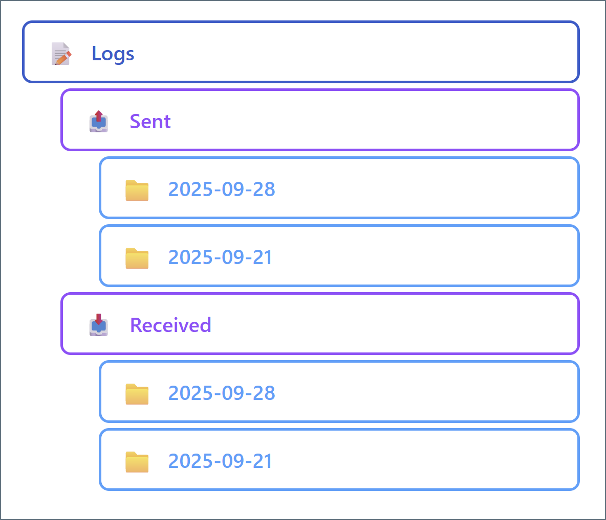
To change the default weekly folder organization, set the Log Subfolder Scheme field of any connector to a different time interval (such as Daily or Monthly). This means that all logs generated in that time interval are held in one subfolder. This can improve disk I/O performance by reducing the size of any individual subfolder.
You can use the Messages tab to find the appropriate log folder, either by finding the MessageId or by using Download Logs.
Sent Files
In addition to verbose log files, the connector maintains copies of the data payload of all successfully sent and processed messages in the Sent folder (messages that are not successfully processed are not added). Files are named based on the time they were generated, and organized in folders by week. To change the default weekly folder organization, set the Sent Folder Scheme field of any connector to a different time interval (such as Daily or Monthly). This means that all files generated in that time interval are held in one subfolder. This can improve disk I/O performance by reducing the size of any individual subfolder.
Note: This Sent folder is a direct child of the connector folder, which is different from the Sent folder in the Logs folder described above.
Additional Configuration Files
Depending on the connector type, some connector folders include additional configuration files. These additional files include:
map.jsonscript.rsb- template XML files
These files store mapping relationships, custom scripting behavior, and the structure of connector input and output. Manually editing these files is equivalent to editing the associated connector UI settings.
Important: It can be risky to manually edit any of these files. The layout is easy to understand and transparent, but incorrectly modifying these configuration files can have unintended consequences.
Design Decisions Behind Connector Implementation
We want flows to be fully modular, which means that each connector should provide a straightforward function in a predictable and intuitive way. Arc’s capacity to perform complex tasks comes from the ability to combine arbitrary sets of connectors, while the connector interfaces remain simple. Sophisticated flows remain easy to understand because the connector chain is broken down into discrete steps.
We want all of the data relevant to a connector (configuration data, application data, logging data, and so on) to be easy to access. Because the data is all stored in a connector-specific folder, accessing the data is just a matter of knowing where to find the folder. Configuration data is stored in the transparent INI format so that it, like message data, can be easily viewed and edited with simple tools.
Our folder-based approach to connectors also makes it easy to understand how data is passed between connectors: a simple file-move operation on the message files turns one connector’s output into another connector’s input. Arc includes built-in tools to establish these file-move relationships automatically.
Important: To ensure that Arc performs reliably, do not interact directly with any configuration files while the application is running. External programs placing locks on these files can cause performance and reliability issues.
Flows and Workspaces Implementation
Flows are represented on the filesystem in a flow.json file that contains the position and connections for each connector in a flow. See Folder Hierarchy for the location of this file.
The position of connectors in a flow is purely cosmetic and is only used when you configure flows in the UI. The connections between connectors are relevant at the data processing level: after a connector writes an output message, it queries the application engine to see if it needs to pass the output message to another connector’s Send folder. The application uses the flow.json file to determine which connector, if any, is given the file.
You can configure multiple flows on the same flow canvas, and the Arc UI lets you drag the canvas around to navigate between flows. This is similar to navigating geographical maps such as Google Maps online.
Workspaces provide a logical separation between flows. Each workspace provides a fresh canvas within which to configure connectors into logical flows. Extending the Google Maps analogy, workspaces function as separate planets.
It is common practice to separate workspaces by trading partners or integrations. However, deciding whether to configure new flows in separate workspaces is a matter of preference. See Organize Flows into Workspaces for more information.
Workspaces on the Filesystem
When you introduce new (non-default) workspaces, Arc adds a new set of folders in the folder hierarchy. The workspaces directory contains the connector folders for all connectors configured in non-default workspaces. The workspaces folder is a sibling of the Data Directory.
Design Decisions Behind Flows and Workspaces
We think that the best way to preserve the simple and modular relationship between connectors in a flow is to treat flows as a purely logical concept. All of the information necessary to determine the logical series of data processing is already contained in the connector implementation.
We want workspaces to provide the ability to separate connectors on a more substantial level. Separate workspaces use separate folders to hold connectors so that filesystem-level operations (such as permissions and directory listings) can be easily isolated to a particular workspace.
Folder Hierarchy
Because all Arc resources are available on the filesystem, understanding Arc at a low level requires learning the application’s folder structure and how files and folders are organized on disk.
To understand the hierarchy, it is helpful to see the directory view of an Arc installation. Following is a visual representation of the folder structure. The details of this structure are explained in the following sections.
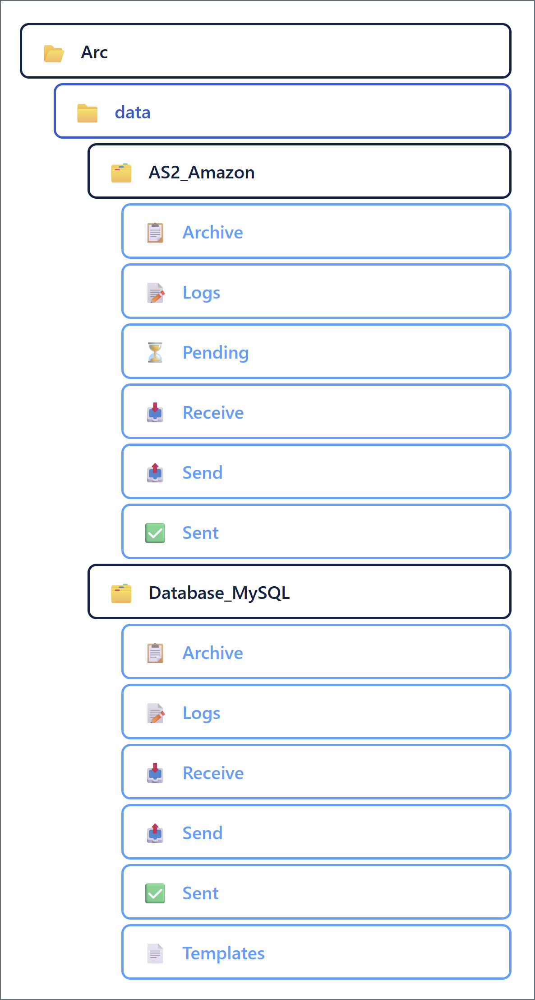
Note: This hierarchy assumes that flows are only configured in the default workspace. See Flows and Workspaces for details on additional workspaces.
Root Installation Directory
All Arc resources are in the installation directory, in the following default locations:
- Windows:
C:\Program Files\CData\CData Arc - Linux:
/opt/arc
For Java installations, CData provides a zip file that you can extract to the installation directory of your choice (for example, /opt/arc).
When the Java edition of Arc is hosted on an external Java servlet like Tomcat, Arc resources reside in ~/cdata/arc. In this path, ~ resolves to the home directory of the user that hosts the Java servlet.
In the folder hierarchy above, the root installation directory is the Arc folder at the top of the tree.
Data Directory
The data directory contains the following:
- A subfolder for each connector configured on the flows page (in the default workspace)
- A profile.cfg file
- A flow.json file
- A roles.json file
- A settings.json file
- A users.json file
- All certificate files
Profile.cfg
The profile.cfg file contains application-wide settings such as those for configured local profiles (for example, the AS2 profile). This file is in INI format: application settings are listed in SettingName = SettingValue syntax, one-setting-per-line.
The profile.cfg settings are divided into sections: an Application section for general application settings, and a dedicated section for each profile (for example, there is an AS2 section for the AS2 profile settings and an SFTPServer section for the local SFTP Server settings).
Editing application settings on the Profile page of the UI is functionally equivalent to editing the settings directly in the profile.cfg file.
Flow.json
The flow.json file contains the structure of configured flows: the positions and connections between each connector instance. Editing flow.json directly accomplishes the same thing as moving or re-connecting connectors on the Flows page.
Roles.json
The roles.json file includes details related to all custom user roles. Editing roles.json directly accomplishes the same thing as adding and configuring roles on the Roles page.
Settings.json
The settings.json file contains a list of settings that can be referenced elsewhere in the application by using reference names instead of values. This enables you to store secure values (like passwords) in a way that does not display them in the application. You can also use reference names to centralize the configuration of flows that are deployed across multiple instances.
Settings that support this centralized reference syntax have a key icon in the UI, which you can click to view a list of defined references in the settings.json file. For more information, see Global Settings Vault.
Users.json
The users.json file contains details related to all Arc users. Editing users.json directly accomplishes the same thing adding or editing users on the Users page.
Certificates
All certificates created or uploaded in the application are stored in the data directory. Typically, certificates come in public/private pairs with the same filename but different file extensions: .pfx for private and .cer for public. Certificates in other formats that are uploaded to the application are stored as-is.
Arc enumerates the certificates in the data directory to determine the options available when configuring a certificate in the UI. Adding a certificate file to the data directory accomplishes the same thing as uploading a certificate in the UI.
Connector Folders
Each configured connector instance has a dedicated folder in the data directory. The folder names folders match the ConnectorId value (the display name) for each connector in the flow. In the example folder structure above, the two configured connectors are AS2_Amazon and Database_MySQL.
The contents of the connector folder are explained in Connector Files and Folders. Following is an overview of the subfolder structure in the connector folder:
- Archive: Older log files are compressed and moved to this folder
- Logs: Verbose log files for each message processed by the connector
- Received: Logs for messages received by the connector; each message has its own folder matching the MessageId
- Sent: Logs for messages sent by the connector; each message has its own folder matching the MessageId
- Receive (Output): Messages that the connector has received or processed
- Send (Input): Messages that the connector should send or process
- Sent: Copies of successfully processed messages (in raw data file format)
Depending on the connector type, some connectors can have other subfolders:
- Pending: Processed messages that are pending an acknowledgement from another party
- Public: Files that should be published as public endpoints in the application
- Schemas: Schema files (like EDI schemas) that are specific to a particular connector
- Templates: XML representations of connector input and output data
Design Decisions Behind the Folder Hierarchy
Because we want the data in Arc to be transparent and accessible, specific files in the application should be easy to find. A simple hierarchical folder structure helps ensure that users and external systems know where to look for the Arc data files.
We want the Arc UI to provide a convenient interface for configuring and using the application, but we also want the application to remain fully embeddable in other solutions. Understanding the Arc folder structure is all that is required to point these other solutions to any relevant Arc data.
Automation
The Arc automation service processes files in the Input folder for each connector. The automation service runs on a half-second clock tick, and messages move one step further through the flow at each tick.
Arc supports parallel processing by distributing multiple threads to each connector, and each thread can process multiple files in that connector. The specific numbers of workers distributed and files processed per-worker are determined by performance settings in the profile and in the specific connector settings.
Clock Ticks
At a predefined interval (500 milliseconds by default), Arc checks the contents of the Send folder for every configured connector, and if new files are found, assigns worker threads to process them according to the connector’s settings.
The application does not guarantee which connector’s Input is enumerated first. When multiple files are in a single connector’s Send folder, they are processed in order according to the last modified time (files modified least recently are processed first).
When Arc attempts to process a file, it adds a message header with the processing timestamp, which changes the last modified time for the file. This means that if a file fails to process (causes an error), it becomes the lowest priority file compared to the rest of the files in the Send folder. This prevents a single file from blocking the operation of a connector by repeatedly throwing an error and immediately being retried.
Parallel Processing
When parallel processing is enabled, Arc can distribute multiple worker threads to the same connector during a single clock tick. The number and behavior of these workers are determined by three settings on the Advanced tab of the Settings page (some of which can be overridden for individual connectors in that connector’s Advanced tab):
- Worker Pool: Establishes the global maximum number of threads that the application can assign to all connectors (combined) at the same time. When a thread finishes its assignment in a specific connector, it is recycled back into the pool. The hardware resources available on the host machine determine the upper limit for this setting.
- Max Workers per Connector: Establishes the maximum number of threads assigned to a single connector at the same time. Each thread assigned to a connector processes files in that connector’s Send folder one at a time until the folder is empty (or until the Max File per Connector is reached). Once this condition is reached, threads assigned to the connector are recycled back into the worker pool as they finish processing. You can override this setting on an individual connector’s Advanced tab.
- Max Files per Connector: Establishes a limit on the number of files processed in a single connector within a single clock tick. For example, if this setting is set to 5, then threads assigned to a connector are recycled back into the worker pool after they have (collectively) processed 5 files, even if there are still files in the connector’s Send folder. You can override this setting on an individual connector’s Advanced tab. When this is set to 0, the connector attempts to process all the files that are present in the connector at the time that the threads are assigned.
Threads are distributed to connectors in round-robin fashion, so adjusting these values (either globally or for specific connectors) can help alleviate throughput problems or prevent some connectors from hogging system resources. The following diagram illustrates how the parallel processing settings work together.
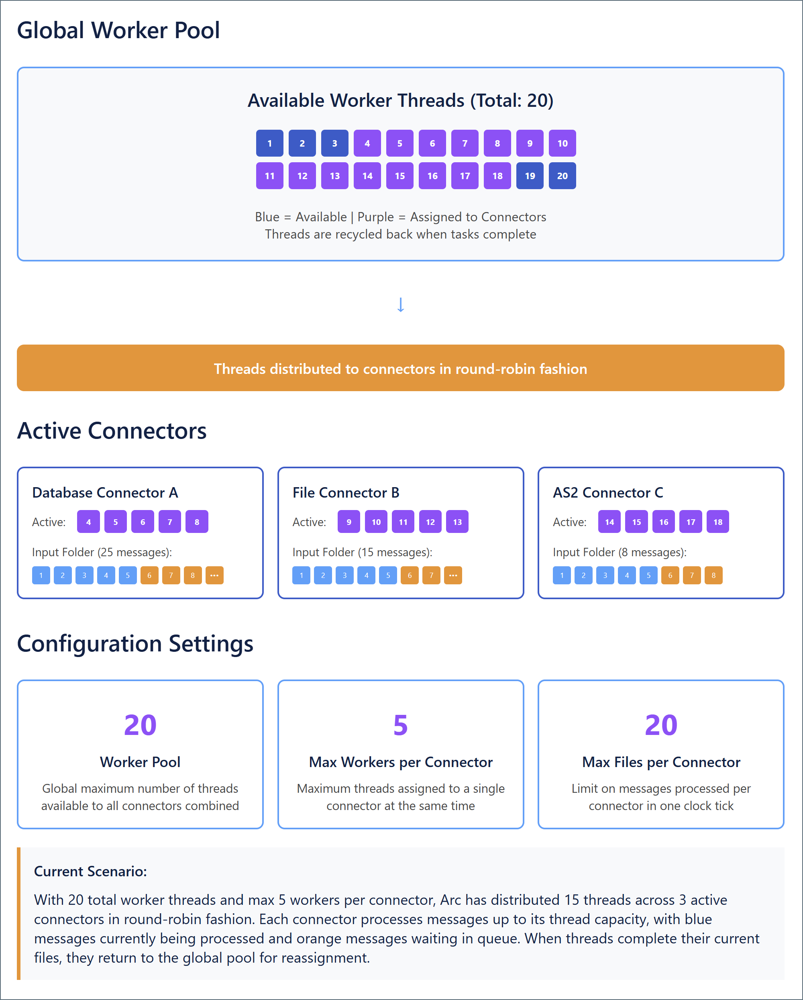
Maximizing Performance
The Max Workers per Connector and Max Files per Connector settings can be adjusted in individual connectors to help maximize Arc performance when certain connectors require more or less resources than others.
Increasing Max Workers per Connector for a particular connector tells the application to assign more system resources when processing that connector’s input files. This is useful when a particular connector acts as a bottleneck for flow throughput. However, because threads are assigned in round-robin fashion, increasing this setting for many different connectors might cause the application to run out of threads in the Worker Pool. When this happens, the application must wait for other threads to finish and be recycled before it can assign them to the remaining connectors.
Decreasing Max Workers per Connector for a particular connector prevents that connector from severely depleting the worker pool when processing files. This can help avoid issues where the application runs out of threads to distribute during round-robin assignment. However, if the connector’s Send folder has many files, it can take a long time for the smaller number of threads to finish processing the files and be recycled back into the pool (unless Max Files per Connector is also adjusted, as discussed below).
Increasing Max Files per Connector for a particular connector (or setting it to 0 to process all files) helps ensure that files do not sit in the connector’s Send folder for multiple clock ticks. This can help increase throughput for high-volume connectors. However, it might also increase the chance that threads assigned to the connector are not recycled back into the worker pool for a long time (which could potentially cause a thread shortage).
Decreasing Max Files per Connector for a particular connector helps ensure that threads assigned to that connector are recycled back into the pool in a timely manner. However, it can mean that files are not always processed within a single clock tick if the number of files in the Send folder exceeds the maximum processed per-tick.
Maximizing performance is specific to your particular environment and use case. In general, connectors that need to process or send a large number of files should be assigned more workers and those workers should be allowed to process more files before recycling. To prevent the thread pool from being exhausted, other connectors should be assigned fewer workers and those workers should be limited to fewer files.
Receive Automation
In Arc, the automated processing of Input files described above is called Send automation. Arc also supports Receive automation, which describes the automated process of connectors pulling files into an Arc flow according to a scheduled interval.
Receive operations fall into two categories:
- Downloading files from a remote host/server (such as FTP, SFTP, or S3)
- Pulling data from a back-end system (such as a database, ERP system, or CRM) and writing it out as XML
Receive automation is always tied to a scheduling interval that determines how often the connector attempts to download files or pull data from an external system.
Every clock tick, the automation service checks to see if any connector’s Receive Interval has elapsed. If so, the connector immediately establishes an outbound connection and pulls data according to the connector’s settings.
Some connectors, like the AS2 connector, passively listen for incoming data to receive. These connectors do not support receive automation because they cannot actively poll an external system for data.
Putting This Document to Use
Getting started in Arc does not require a full understanding of the underlying architecture. However, peeling back the layers of the application provides an important set of benefits:
- Evaluating whether the Arc approach fits more specific technical requirements
- Manipulating and configuring the application with greater understanding and control
- Understanding how to embed Arc as part of a larger data-processing solution
Evaluate Arc’s Technical Characteristics
Arc is a lightweight implementation of a message-driven integration framework. An understanding of its underpinnings helps engineers know whether this approach is suitable for their specific business needs.
After reading this document, we hope the principles guiding our design decisions are clear, since these principles continue to shape the growth and development of the application. Understanding the why behind an application’s design helps users make informed decisions about whether it is right for them.
Manipulate Arc With Confidence
The Arc UI provides an accessible interface for manipulating and configuring the application. A better understanding of the underlying architecture helps users perform more advanced work under the hood, such as setting permissions on specific folders for granular control over user access.
In addition, we believe that a conceptual grasp of flows, connectors, and their relationship with application data can help users quickly and easily configure optimal workflows. We prioritize the ability for users to take advantage of the Arc feature set with minimal configuration overhead.
Embed Arc in a Larger Solution
Once a user knows the Arc folder structure, the process of embedding Arc in another data processing system is simple. Since Arc interfaces with the system through a set of well-defined folders on disk, any application that reads and writes from specified folders can seamlessly pass data to and from Arc. CData recommends using a File connector when interacting with external systems. See Interacting with the Local File System for configuration details.
Feel Comfortable with Arc
Finally, we believe that engineers have a common desire to understand the mechanisms underlying the systems that they use. Even if none of the benefits listed above are applicable to your implementation, we hope that this document has provided you with an additional layer of comfort and familiarity that helps you as you use Arc to build your own data integration workflows. If you have any questions about the content of this document or need further guidance, please reach out to our dedicated support team at arcsupport@cdata.com and we will be happy to assist you.